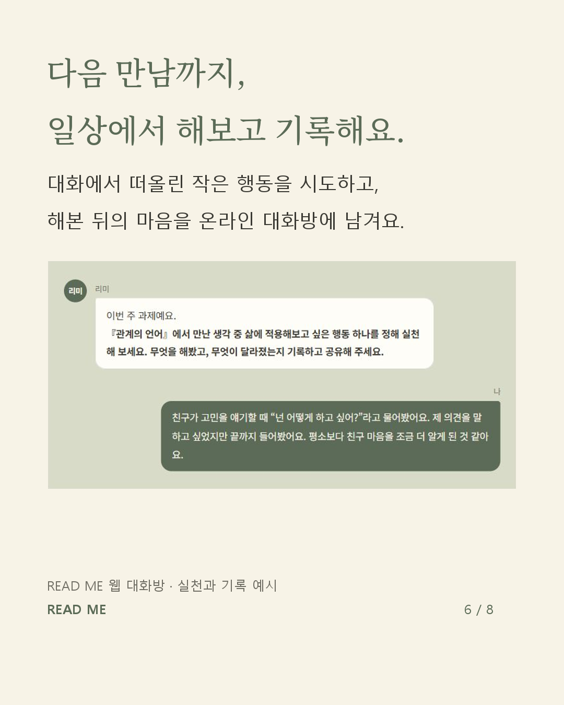
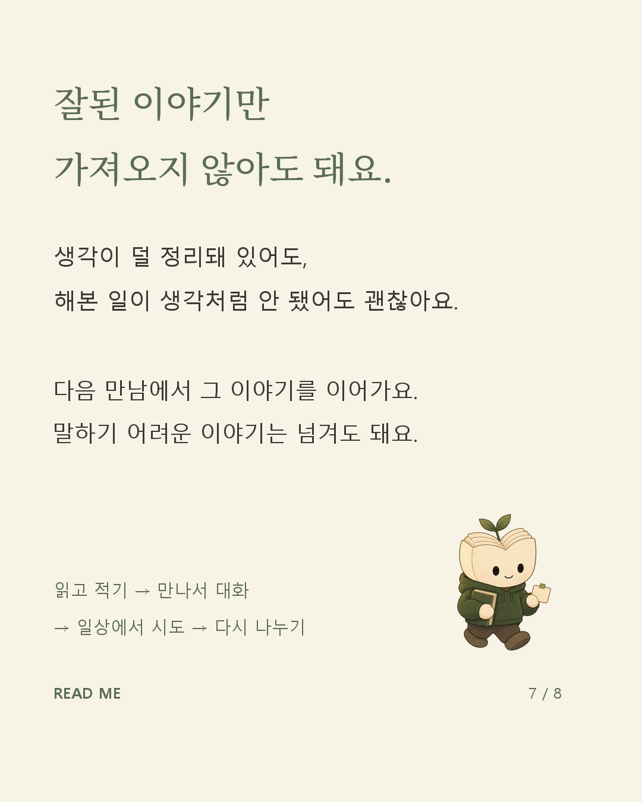

같은 문장, 다른 글씨
A는 현재 스타일, B는 Noto Serif KR 명조 제목입니다. 문구·리미·본문 배치는 유지했습니다. 1장은 배경도 초록에서 크림으로 바꿨고, 5장은 손글씨와 명조의 차이를 비교합니다.
1장
5장
실천·기록은 어디에 있나요?
현재 6장 하단의 ‘다시 일상으로 돌아가면’과 7장의 행동 예시에 들어 있습니다. ‘내 생각 / 새로 들은 관점 / 해볼 일’ 노트 디자인은 아직 적용하지 않은 제안입니다.

6장 · 하단에 시도와 기록 안내
7장 · 일상에서 해볼 행동 예시